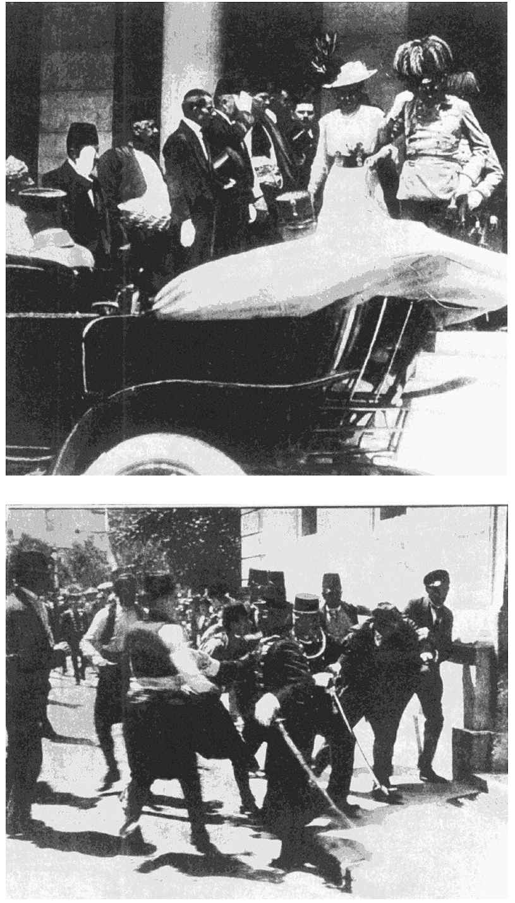

1914年6月28日，弗朗茨·斐迪南大公及其妻子在新近吞并的波斯尼亚省首府萨拉热窝遇刺。刺客是波斯尼亚的一个塞尔维亚族青年学生，名叫加夫里洛·普林西普。他行刺绝非孤身一人。在他的背后是塞尔维亚秘密组织“不统一毋宁死”，即众所周知的“黑手社”。黑手社于1911年成立于贝尔格莱德，其公开宣称的目的是实现“民族理想：团结所有的塞尔维亚人”。塞尔维亚政府并不支持这一组织，认为该组织的确十分危险、激进、好战。但这并不妨碍黑手社建立起一个进行有效鼓动和恐怖活动的地下革命组织。

图248 （上）1914年6月28日，奥匈帝国皇储弗朗茨·斐迪南和他的妻子在萨拉热窝。（下）在这一天较晚些时候，皇储夫妇被塞尔维亚人培训和指使的青年革命分子刺杀，点燃了导致第一次世界大战的导火线。刺杀发生之后，奥匈帝国的警察抓住其中一个凶手。
不幸的弗朗茨·斐迪南因同意正式访问波斯尼亚首府，使这些塞尔维亚革命者有了可乘之机。当大公及其妻子在阳光灿烂的6月28日星期天早晨开始访问时，至少有六名刺客身带炸弹和左轮手枪等候在指定的路线上。就像命中注定的一样，当队伍在街的拐角处停下来时，普林西普正好站在那儿。他掏出左轮手枪，连开两枪，一枪射向弗朗茨·斐迪南，一枪射向波斯尼亚总督波西奥莱克将军。可是第二枪射偏，击中了大公夫人。医生还未来得及抢救，大公及其妻子就已死去。
7月23日，奥匈帝国向塞尔维亚发出最后通牒，包含若干苛刻的条件。塞尔维亚7月25日的答复几乎接受所有条件，但拒绝奥匈帝国官员在塞尔维亚领土上参与调查该案的要求。奥匈帝国立刻断绝同塞尔维亚的外交关系，并于7月28日向塞尔维亚宣战。
俄国为了报复，于7月30日命令全国总动员。第二天，德国向俄国发出为期12个小时的最后通牒，要求停止总动员。德国没有得到答复，于8月1日向俄国宣战，并于8月3日向俄国的同盟国法国宣战。就在同一天，德国入侵比利时，开始了实际的战争行动。英国人在德国卷入后开始干预，但他们这么做，公开的借口并不是与法国的秘密军事承诺，而是对德国人入侵比利时的反应，这更宜为英国公众所接受。这样，欧洲列强在萨拉热窝刺杀事件过去5个星期时就已开始互相进攻。